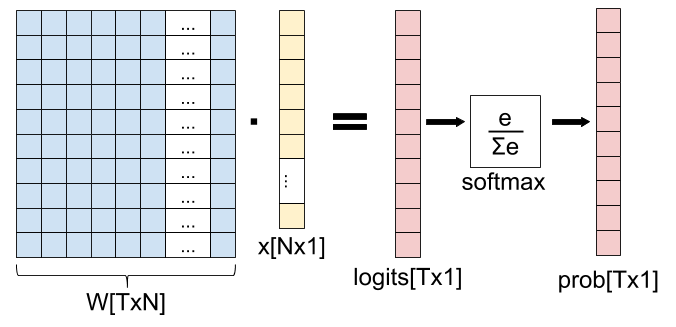

The softmax function takes an N-dimensional vector of arbitrary real values and produces another N-dimensional vector with real values in the range (0, 1) that add up to 1.0. It maps :
And the actual per-element formula is:
It's easy to see that is always positive (because of the exponents); moreover, since the numerator appears in the denominator summed up with some other positive numbers, . Therefore, it's in the range (0, 1).
For example, the 3-element vector [1.0, 2.0, 3.0] gets transformed into [0.09, 0.24, 0.67]. The order of elements by relative size is preserved, and they add up to 1.0. Let's tweak this vector slightly into: [1.0, 2.0, 5.0]. We get the output [0.02, 0.05, 0.93], which still preserves these properties. Note that as the last element is farther away from the first two, it's softmax value is dominating the overall slice of size 1.0 in the output. Intuitively, the softmax function is a "soft" version of the maximum function. Instead of just selecting one maximal element, softmax breaks the vector up into parts of a whole (1.0) with the maximal input element getting a proportionally larger chunk, but the other elements getting some of it as well [1].
Probabilistic interpretation
The properties of softmax (all output values in the range (0, 1) and sum up to 1.0) make it suitable for a probabilistic interpretation that's very useful in machine learning. In particular, in multiclass classification tasks, we often want to assign probabilities that our input belongs to one of a set of output classes.
If we have N output classes, we're looking for an N-vector of probabilities that sum up to 1; sounds familiar?
We can interpret softmax as follows:
Where y is the output class numbered . a is any N-vector. The most basic example is multiclass logistic regression, where an input vector x is multiplied by a weight matrix W, and the result of this dot product is fed into a softmax function to produce probabilities. This architecture is explored in detail later in the post.
Some preliminaries from vector calculus
Before diving into computing the derivative of softmax, let's start with some preliminaries from vector calculus.
Softmax is fundamentally a vector function. It takes a vector as input and produces a vector as output; in other words, it has multiple inputs and multiple outputs. Therefore, we cannot just ask for "the derivative of softmax"; We should instead specify:
- Which component (output element) of softmax we're seeking to find the derivative of.
- Since softmax has multiple inputs, with respect to which input element the partial derivative is computed.
If this sounds complicated, don't worry. This is exactly why the notation of vector calculus was developed. What we're looking for is the partial derivatives:
This is the partial derivative of the i-th output w.r.t. the j-th input. A shorter way to write it that we'll be using going forward is: .
Since softmax is a function, the most general derivative we compute for it is the Jacobian matrix:
In ML literature, the term "gradient" is commonly used to stand in for the derivative. Strictly speaking, gradients are only defined for scalar functions (such as loss functions in ML); for vector functions like softmax it's imprecise to talk about a "gradient"; the Jacobian is the fully general derivate of a vector function, but in most places I'll just be saying "derivative".
Derivative of softmax
Let's compute for arbitrary i and j:
We'll be using the quotient rule of derivatives. For :
In our case, we have:
Note that no matter which we compute the derivative of for, the answer will always be . This is not the case for , howewer. The derivative of w.r.t. is only if , because only then has anywhere in it. Otherwise, the derivative is 0.
Going back to our ; we'll start with the case. Then, using the quotient rule we have:
For simplicity stands for . Reordering a bit:
The final formula expresses the derivative in terms of itself - a common trick when functions with exponents are involved.
Similarly, we can do the case:
To summarize:
I like seeing this explicit breakdown by cases, but if anyone is taking more pride in being concise and clever than programmers, it's mathematicians. This is why you'll find various "condensed" formulations of the same equation in the literature. One of the most common ones is using the Kronecker delta function:
To write:
Which is, of course, the same thing. There are a couple of other formulations one sees in the literature:
- Using the matrix formulation of the Jacobian directly to replace with - the identity matrix, whose elements are expressing in matrix form.
- Using "1" as the function name instead of the Kroneker delta, as follows: . Here means the value 1 when and the value 0 otherwise.
The condensed notation comes useful when we want to compute more complex derivatives that depend on the softmax derivative; otherwise we'd have to propagate the condition everywhere.
Computing softmax and numerical stability
A simple way of computing the softmax function on a given vector in Python is:
def softmax(x):
"""Compute the softmax of vector x."""
exps = np.exp(x)
return exps / np.sum(exps)
Let's try it with the sample 3-element vector we've used as an example earlier:
In [146]: softmax([1, 2, 3])
Out[146]: array([ 0.09003057, 0.24472847, 0.66524096])
However, if we run this function with larger numbers (or large negative numbers) we have a problem:
In [148]: softmax([1000, 2000, 3000])
Out[148]: array([ nan, nan, nan])
The numerical range of the floating-point numbers used by Numpy is limited. For float64, the maximal representable number is on the order of . Exponentiation in the softmax function makes it possible to easily overshoot this number, even for fairly modest-sized inputs.
A nice way to avoid this problem is by normalizing the inputs to be not too large or too small, by observing that we can use an arbitrary constant C as follows:
And then pushing the constant into the exponent, we get:
Since C is just an arbitrary constant, we can instead write:
Where D is also an arbitrary constant. This formula is equivalent to the original for any D, so we're free to choose a D that will make our computation better numerically. A good choice is the maximum between all inputs, negated:
This will shift the inputs to a range close to zero, assuming the inputs themselves are not too far from each other. Crucially, it shifts them all to be negative (except the maximal which turns into a zero). Negatives with large exponents "saturate" to zero rather than infinity, so we have a better chance of avoiding NaNs.
def stablesoftmax(x):
"""Compute the softmax of vector x in a numerically stable way."""
shiftx = x - np.max(x)
exps = np.exp(shiftx)
return exps / np.sum(exps)
And now:
In [150]: stablesoftmax([1000, 2000, 3000])
Out[150]: array([ 0., 0., 1.])
Note that this is still imperfect, since mathematically softmax would never really produce a zero, but this is much better than NaNs, and since the distance between the inputs is very large it's expected to get a result extremely close to zero anyway.
The softmax layer and its derivative
A common use of softmax appears in machine learning, in particular in logistic regression: the softmax "layer", wherein we apply softmax to the output of a fully-connected layer (matrix multiplication):
In this diagram, we have an input x with N features, and T possible output classes. The weight matrix W is used to transform x into a vector with T elements (called "logits" in ML folklore), and the softmax function is used to "collapse" the logits into a vector of probabilities denoting the probability of x belonging to each one of the T output classes.
How do we compute the derivative of this "softmax layer" (fully-connected matrix multiplication followed by softmax)? Using the chain rule, of course! You'll find any number of derivations of this derivative online, but I want to approach it from first principles, by carefully applying the multivariate chain rule to the Jacobians of the functions involved.
An important point before we get started: you may think that x is a natural variable to compute the derivative for. But it's not. In fact, in machine learning we usually want to find the best weight matrix W, and thus it is W we want to update with every step of gradient descent. Therefore, we'll be computing the derivative of this layer w.r.t. W.
Let's start by rewriting this diagram as a composition of vector functions. First, we have the matrix multiplication, which we denote . It maps , because the input (matrix W) has N times T elements, and the output has T elements.
Next we have the softmax. If we denote the vector of logits as , we have . Overall, we have the function composition:
By applying the multivariate chain rule, the Jacobian of is:
We've computed the Jacobian of earlier in this post; what's remaining is the Jacobian of . Since g is a very simple function, computing its Jacobian is easy; the only complication is dealing with the indices correctly. We have to keep track of which weight each derivative is for. Since , its Jacobian has T rows and NT columns:
In a sense, the weight matrix W is "linearized" to a vector of length NT. If you're familiar with the memory layout of multi-dimensional arrays, it should be easy to understand how it's done. In our case, one simple thing we can do is linearize it in row-major order, where the first row is consecutive, followed by the second row, etc. Mathematically, will get column number in the Jacobian. To populate , let's recall what is:
Therefore:
If we follow the same approach to compute , we'll get the Jacobian matrix:
Looking at it differently, if we split the index of W to i and j, we get:
This goes into row t, column in the Jacobian matrix.
Finally, to compute the full Jacobian of the softmax layer, we just do a dot product between and . Note that , so the Jacobian dimensions work out. Since is TxT and is TxNT, their dot product is TxNT.
In literature you'll see a much shortened derivation of the derivative of the softmax layer. That's fine, since the two functions involved are simple and well known. If we carefully compute a dot product between a row in and a column in :
is mostly zeros, so the end result is simpler. The only k for which is nonzero is when ; then it's equal to . Therefore:
So it's entirely possible to compute the derivative of the softmax layer without actual Jacobian matrix multiplication; and that's good, because matrix multiplication is expensive! The reason we can avoid most computation is that the Jacobian of the fully-connected layer is sparse.
That said, I still felt it's important to show how this derivative comes to life from first principles based on the composition of Jacobians for the functions involved. The advantage of this approach is that it works exactly the same for more complex compositions of functions, where the "closed form" of the derivative for each element is much harder to compute otherwise.
Softmax and cross-entropy loss
We've just seen how the softmax function is used as part of a machine learning network, and how to compute its derivative using the multivariate chain rule. While we're at it, it's worth to take a look at a loss function that's commonly used along with softmax for training a network: cross-entropy.
Cross-entropy has an interesting probabilistic and information-theoretic interpretation, but here I'll just focus on the mechanics. For two discrete probability distributions p and q, the cross-entropy function is defined as:
Where k goes over all the possible values of the random variable the distributions are defined for. Specifically, in our case there are T output classes, so k would go from 1 to T.
If we start from the softmax output P - this is one probability distribution [2]. The other probability distribution is the "correct" classification output, usually denoted by Y. This is a one-hot encoded vector of size T, where all elements except one are 0.0, and one element is 1.0 - this element marks the correct class for the data being classified. Let's rephrase the cross-entropy loss formula for our domain:
k goes over all the output classes. is the probability of the class as predicted by the model. is the "true" probability of the class as provided by the data. Let's mark the sole index where by y. Since for all we have , the cross-entropy formula can be simplified to:
Actually, let's make it a function of just P, treating y as a constant. Moreover, since in our case P is a vector, we can express as the y-th element of P, or :
The Jacobian of xent is a 1xT matrix (a row vector), since the output is a scalar and we have T inputs (the vector P has T elements):
Now recall that P can be expressed as a function of input weights: . So we have another function composition:
And we can, once again, use the multivariate chain rule to find the gradient of xent w.r.t. W:
Let's check that the dimensions of the Jacobian matrices work out. We already computed ; it's TxNT. is 1xT, so the resulting Jacobian is 1xNT, which makes sense because the whole network has one output (the cross-entropy loss - a scalar value) and NT inputs (the weights).
Here again, there's a straightforward way to find a simple formula for , since many elements in the matrix multiplication end up cancelling out. Note that depends only on the y-th element of P. Therefore, only is non-zero in the Jacobian:
And . Going back to the full Jacobian , we multiply by each column of to get each element in the resulting row-vector. Recall that the row vector represents the whole weight matrix W "linearized" in row-major order. We'll index into it with i and j for clarity ( points to element number in the row vector):
Since only the y-th element in is non-zero, we get the following, also substituting the derivative of the softmax layer from earlier in the post:
By our definition, , so we get:
Once again, even though in this case the end result is nice and clean, it didn't necessarily have to be so. The formula for could end up being a fairly involved sum (or sum of sums). The technique of multiplying Jacobian matrices is oblivious to all this, as the computer can do all the sums for us. All we have to do is compute the individial Jacobians, which is usually easier because they are for simpler, non-composed functions. This is the beauty and utility of the multivariate chain rule.
| [1] | To play more with sample inputs and Softmax outputs, Michael Nielsen's online book has a nice interactive Javascript visualization - check it out. |
| [2] | Take a moment to recall that, by definition, the output of the softmax function is indeed a valid discrete probability distribution. |